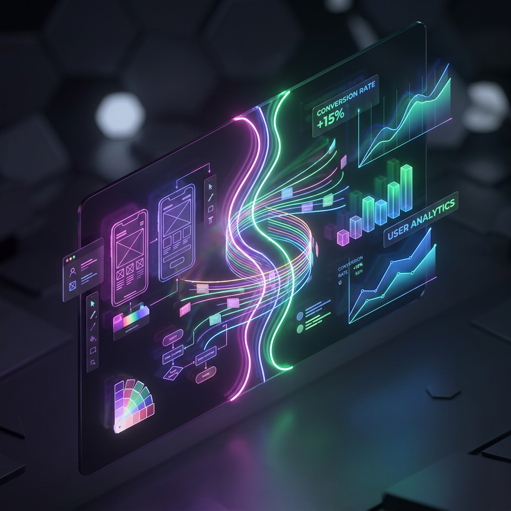

Data-Driven Design
How a Digital Strategist and a UX/UI Designer collaborate to build experiences that look beautiful and convert effectively. Switch the theme above to see how global UI paradigms shift the experience.

A Continuous Feedback Loop
1. The Strategist Analyzes
The strategist reviews analytics data and identifies a friction point: a 40% drop-off rate on the mobile checkout flow. They set a KPI to reduce cart abandonment and provide hypotheses based on user behavior.
2. The Designer Ideates
The UX/UI designer takes the hypotheses and designs solutions. They implement an accordion-style form to reduce cognitive load and apply the brand's visual hierarchy to guide the user's eye towards the primary CTA.
3. The Team Tests
The new design is launched as an A/B test. The strategist monitors the live data, measuring the impact of the designer's work. The winning variant yields a 15% lift in conversions, and the insights inform the next iteration.
The Strategy & Design Intersection
How Youssef McCarthy combines conversion science with aesthetic engineering to build experiences that inspire trust and drive performance.
The Digital Strategist's Lens
Decisions are governed by telemetry, mathematical models, and behavioral psychology.
Friction Point Mapping
We analyze user funnels, find drop-offs (like a 40% bounce on registration pages), and formulate data-backed optimization hypotheses.
Mathematical Models
We run rigorous A/B simulations using binomial distribution models to guarantee statistical significance, avoiding false positives.
Cognitive Load Reduction
We apply Hick's Law and Miller's Law to trim input fields, streamline navigation paths, and remove purchase friction.
The UX/UI Designer's Lens
Experiences are built using emotional connection, visual hierarchy, and haptic feedback.
Global Design Tokens
We maintain pixel-perfect harmony. Switching themes morphs global color variables, type scales, and spacing models dynamically.
Tactile Feedback & Haptics
We build emotional rhythm. Custom AudioContext synthesis provides subtle micro-chimes that validate user actions and guide pathways.
Hardware-Accelerated Depth
We leverage native CSS backdrop filters, glassmorphic refraction, and cubic-bezier motion curves to make pages feel incredibly premium.
How This Page Was Built
This page was built through a direct, live conversation between a human and an AI. The designer of this entire experience was actually an AI Agent (Antigravity), who designed and engineered all layouts, vector mockups, haptic chimes, and the 5 dynamic theme systems based on interactive instructions. Everything shown in the simulator is a live representation of this collaborative intelligence.
Furthermore, the rest of this entire portfolio website was also designed and refined with the assistance of an AI designer, seamlessly guided by the precise vision, strategic alignment, and expert orchestration of Youssef McCarthy, acting as the digital strategist.

Homepage Hero Layout
Simulate an A/B test measuring how replacing a standard left-aligned text-heavy layout (Control) with an interactive split isometric CTA page (Challenger) affects user conversions.